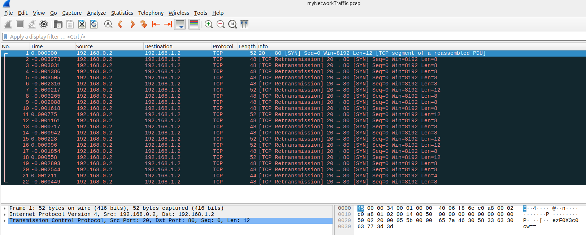
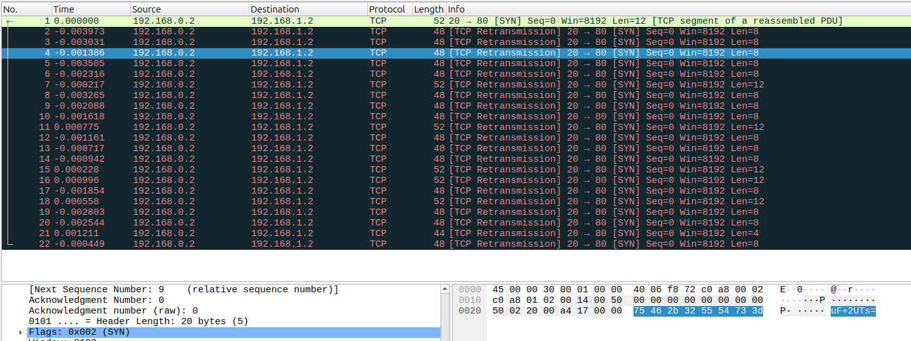
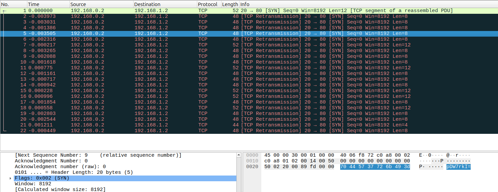
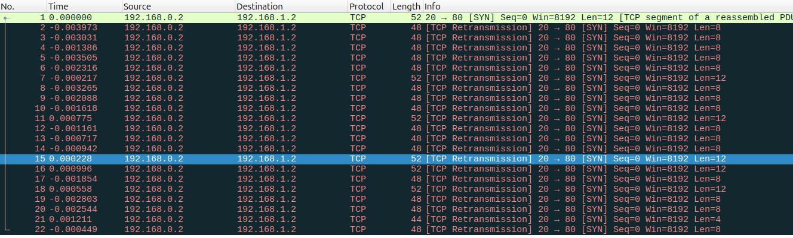
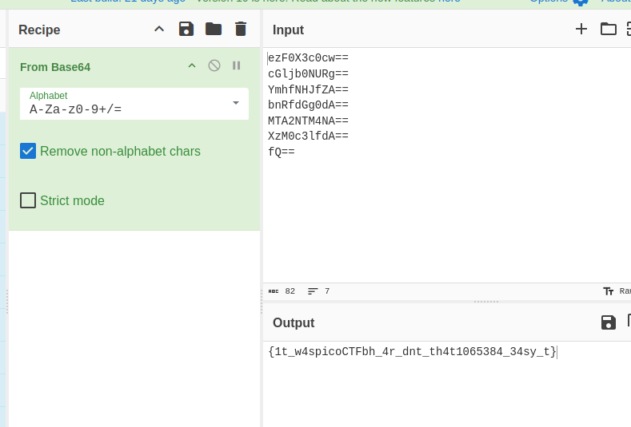
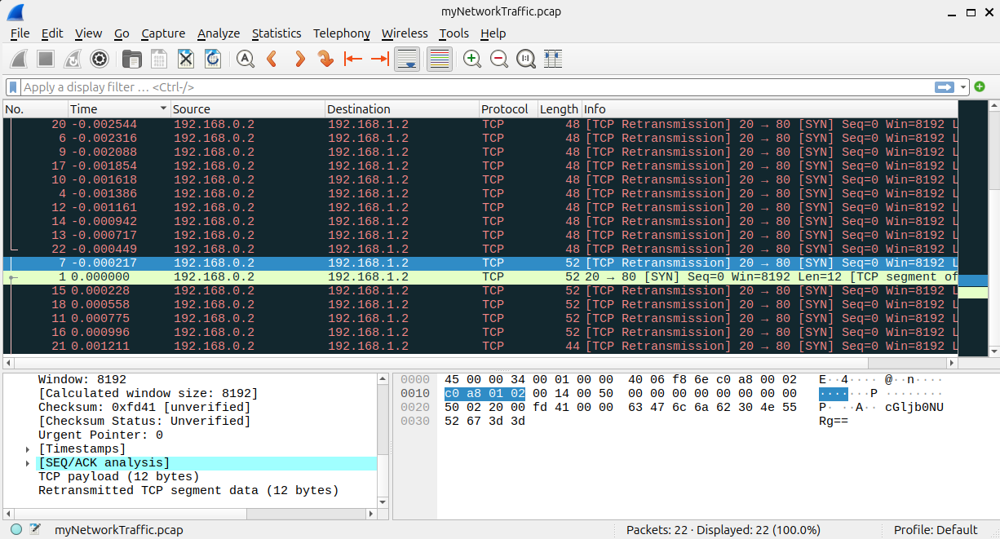
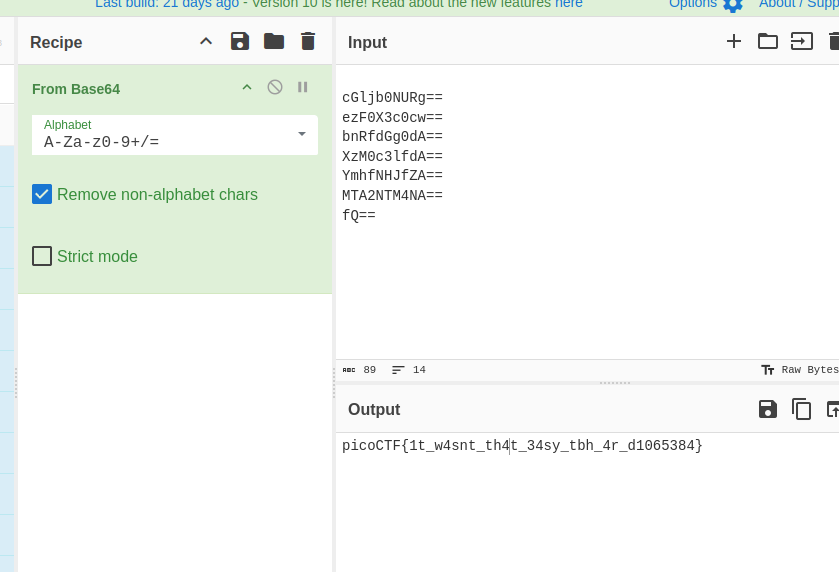

Challenge Description
A digital ghost has breached my defenses, and my sensitive data has been stolen! 😱💻 Your mission is to uncover how this phantom intruder infiltrated my system and retrieve the hidden flag. To solve this challenge, you'll need to analyze the provided PCAP file and track down the attack method. The attacker has cleverly concealed his moves in well timely manner. Dive into the network traffic, apply the right filters and show off your forensic prowess and unmask the digital intruder! Find the PCAP file here Network Traffic PCAP file and try to get the flag.
Writeup Steps
- Open `myNetworkTraffic.pcap` file using Wireshark. I always use Wireshark for `.pcap` files.
-
After accessing Wireshark, we can see the first packet has ASCII ending with `==`.

Bottom-right: string
ezF0X3c0cw==— base64 usually ends with==. -
Let's check if it's part of the flag.
Seems like part of the flag. Let's search for more base64 strings.
-
While checking other traffic, I found strings ending with just
=instead of==.  I noticed that only packets where length ≠ 48 end with
==, so those might hold the flag. -
I extracted those packets and found the flag segments are out of order.

Since flag format is
picoCTF{...}, we look for that pattern. -
The packet with the smallest Time had
picoCTFin it.I then sorted packets by ascending timestamp.
-
Finally, I got the full flag!

Flag
picoCTF{1t_w4snt_th4t_34sy_tbh_4r_d1065384}Tools
Wireshark